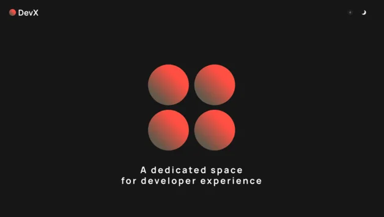

Data Science and Computer Science & Engineering student in
Eindhoven with experience across MLOps, applied machine learning,
analytics, and consulting.
Each project can open into a larger case-study view with long-form
notes, extra images, links, and GitHub references. The card images
are only visual hints and can be replaced with final screenshots.
Data science dashboard
Feb 2025 - May 2025
Real-World Crime and Security Data Science
Integrated large crime, socio-economic, and geospatial
datasets into forecasting models and an interactive analysis
dashboard.
Python
LightGBM
GeoPandas
Dash
Deep learning
Feb 2025 - Apr 2025
University Data Challenge - X-ray ML Model
Deep learning diagnostic model for chest X-ray analysis with
preprocessing, augmentation, and multi-class evaluation.
PyTorch
OpenCV
Docker

NLP analytics
Feb 2024 - Apr 2024
University Airline Twitter Analysis
Cleaned multilingual Air France tweets, stored processed data
in SQLite, and extracted support-performance sentiment
insights.
Python
SQLite
VADER
spaCy
Work history
Professional experience in ML, data, and consulting
Apr 2026 - Present
MLOps Engineer
mih360 | Eindhoven | Hybrid
Architected and automated CI/CD pipelines for machine
learning, moving models from experimental notebooks to
production-ready APIs while improving deployment
reproducibility.
Advised organizations on data-driven strategy and
operational improvement through business analysis,
analytical frameworks, market analysis, and financial
analysis.
Excel, data analysis, business analysis, market analysis, financial analysis
Jun 2025 - Apr 2026
Junior Data Scientist
mih360 | Remote
Applied machine learning to industrial optimization and
workforce analytics, developing predictive models,
statistical learning pipelines, and operational
decision-support systems.
Double Bachelor: Data Science and Computer Science & Engineering
Joint Data Science program at TU Eindhoven and Tilburg
University, combined with Computer Science & Engineering at
TU Eindhoven.
Coursework includes data mining, NLP, data structures, machine
learning, data analytics, data ethics, visualization,
statistical computing, econometrics, Java programming, computer
systems, logic, and discrete mathematics.